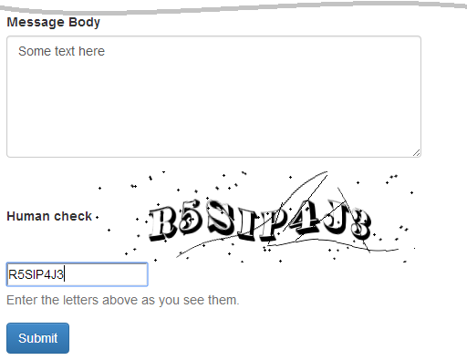
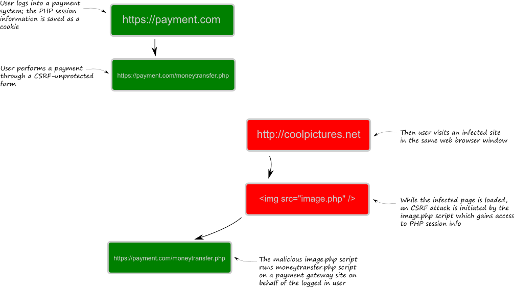

11.1. Elementos de seguridad para formularios
Consideraremos el uso de dos elementos de seguridad para formularios que
provee Zend Framework 3: Captcha y Csrf (ambas clases pertenecen
al espacio de nombre Zend\Form\Element). Agregando estos elementos a
nuestro modelo de formulario (e imprimiéndolos en una plantilla de vista),
haremos a nuestro formulario resistente a ataques que crackers.
11.1.1. CAPTCHA
Un CAPTCHA (siglas de «Completely Automated Public Turing test to tell Computers and Humans Apart») es una prueba usada en los sitios webs para determinar si el usuario es un humano o un robot.
Existen varios tipos de CAPTCHA. El que es usado más ampliamente obliga al usuario a escribir las letras de una imagen distorsionada que se muestra en la página web (ver figura 11.1 en la que hay unos ejemplos).
 Figura 11.1. Ejemplos de CAPTCHA
Figura 11.1. Ejemplos de CAPTCHA
Una prueba CAPTCHA trabaja usando los siguientes algoritmos:
- Una secuencia secreta de caracteres (palabra) se genera del lado del servidor.
- La palabra secreta se guarda en la variable de sesión de PHP.
- Una imagen distorsionada se genera en base a la palabra secreta. Luego, la imagen se muestra al usuario en la página web.
- Se le pide al usuario que escriba los caracteres que se muestran en la imagen.
- Si los caracteres escritos por el usuario son los mismos que la palabra secreta guardada en la sesión la prueba se considera pasada.
El objetivo de la prueba CAPTCHA es proteger nuestro formulario de ser llenado y enviado por procesos automáticos (llamados robots). Usualmente, estos robots envían mensajes no deseados a foros, roban las contraseñas en los formularios de inicio de sesión del sitio o ejecutan algunas otras acciones maliciosas.
La prueba CAPTCHA permite distinguir de manera fidedigna entre humanos y robots, porque los humanos son capaces de reconocer fácilmente y reproducir caracteres desde imágenes distorsionadas, mientras que los robots no (con el estado de evolución actual de los algoritmos de vision computarizada).
11.1.1.1. Tipos de CAPTCHA
En Zend Framework 3, existen varios tipos de CAPTCHA disponibles, todos ellos
pertenecen al componente Zend\Captcha:
Dumb. Este es un algoritmo CAPTCHA muy simple que requiere que el usuario del sitio escriba las letras de una palabra en orden inverso. Aquí, no consideraremos con detalle este tipo de CAPTCHA porque provee un nivel de protección demasiado bajo.
Image. Un algoritmo CAPTCHA que distorsiona una imagen añadiendo algo de ruido con puntos y líneas curvas (figura 11.1, a).
Figlet. Un CAPTCHA poco usual que usa el programa FIGlet en lugar de un algoritmo de distorsión de imágenes. FIGlet es un programa de software libre que genera la imagen CAPTCHA de muchas pequeñas letras ASCII (figura 11.1, b).
El componente Zend\Captcha provee una interfaz unificada para todos los tipos
de CAPTCHA, la interfaz AdapterInterface. La clase base AbstractAdapter
implementa esta interfaz y todos los otros algoritmos CAPTCHA se derivan
de la clase adaptadora abstracta 45. El diagrama de herencia de clase
se muestra en la figura 11.2 más abajo.
 Figura 11.2. Clase adaptadora CAPTCHA
Figura 11.2. Clase adaptadora CAPTCHA
45) El adaptador es una patrón de diseño que traduce una interfaz para
una clase dentro de una interfaz compatible, que ayuda a dos o varias
interfaces incompatibles a trabajar juntas. Generalmente, los algoritmos
CAPTCHA tienen diferentes métodos públicos, pero como todo ellos
implementan la interfaz AbstractAdapter se puede usar cualquier
algoritmo de una misma manera, es decir, llamando al método apropiado
por medio de la interfaz base.
Como podemos ver en la figura 11.2, existe otra clase base para todos los tipos
de CAPTCHA que utilizan palabras secretas de caracteres: la clase
AbastractWord. Esta clase base provee métodos para generar secuencias aleatorias
de caracteres y para ajustar la opciones de generación de palabras.
11.1.1.2. El elemento CAPTCHA para formularios y el ayudante de vista
ZF3 provee una clase de elemento de formulario dedicada y una clase ayudante de vista que nos permite usar campos CAPTCHA en nuestros formularios.
Para añadir un campo CAPTCHA a un modelo de formulario usamos la clase Captcha
que pertenece al componente Zend\Form y vive en el espacio de nombres
Zend\Form\Element.
La clase de elemento Captcha se puede usar con cualquier algoritmo CAPTCHA
del componente Zend\Captcha (listados en la sección anterior). Por
esta razón, la clase de elemento tiene el método setCaptcha() que toma una
instancia de una clase que implementa la interfaz Zend\Captcha\AdapterInterface
o una arreglo que contiene la configuración para el CAPTCHA 46. Con el
método setCaptcha() podemos asociar el tipo de CAPTCHA deseado al elemento.
46) En el último caso (arreglo de configuración), el algoritmo del CAPTCHA
será instanciado automáticamente e inicializado por la clase fábrica
Zend\Captcha\Factory.
Agregamos el elemento Captcha al modelo de formulario de la manera acostumbrada,
con el método add() que provee la clase base Zend\Form\Form. Como sabemos,
podemos pasarle una instancia de la clase Zend\Form\Element\Captcha o un
arreglo especificando las opciones de configuración para un determinado algoritmo
de CAPTCHA (en este caso, el elemento y su algoritmo CAPTCHA asociado serán
automáticamente instanciados y configurados por la clase fábrica).
El código de ejemplo de arriba muestra como usar el método add() (pasando un
arreglo de configuración). Preferimos este método porque se necesita menos código que
escribir. Además, se supone que se está llamando este código dentro del método protegido
addElements() del modelo del formulario:
<?php
// Add the CAPTCHA field to the form model
$this->add([
'type' => 'captcha',
'name' => 'captcha',
'options' => [
'label' => 'Human check',
'captcha' => [
'class' => '<captcha_class_name>', //
// Certain-class-specific options follow here ...
],
],
]);
En el ejemplo de arriba llamamos al método add() que provee la clase base
Form y le pasamos un arreglo que describe al elemento que se insertará (línea 3):
- La llave
typedel arreglo (línea 4), como es usual, puede ser el nombre completo de la clase (Zend\Form\Element\Captcha) o su alias («captcha»). - La llave
name(línea 5) es el valor para el atributo «name» del campo del formulario HTML. - La llave
optionscontiene el algoritmo CAPTCHA asociado. La llaveclass(línea 9) puede contener el nombre completo de la clase CAPTCHA (ejemplo,Zend\Captcha\Image) o su alias (por ejemplo, «Image»). Otras opciones específicas de cada adaptador se pueden agregar a la llave. Mostraremos como hacer esto un poco más tarde.
Para generar el código HTML para el elemento podemos usar la clase ayudante de
vista (que pertenece al espacio de nombres Zend\Form\View\Helper). Pero, como
aprendimos en el capítulo previo generalmente usamos el ayudante de vista
genérico, de la manera que se muestra más abajo:
<?= $this->formElement($form->get('captcha')); ?>
Aquí estamos suponiendo que se llama al ayudante de vista dentro de la plantilla de vista.
A continuación daremos dos ejemplos que ilustran como usar tipos de CAPTCHA
diferentes con ZF3: Image y Figlet. Mostraremos como agregar el campo CAPTCHA
al formulario de contacto que usamos como ejemplo en capítulos anteriores.
11.1.1.3. Ejemplo 1: Agregar la Imagen CAPTCHA al ContactForm
La imagen CAPTCHA requiere tener instalada la extensión de PHP GD con soporte para PNG y tipo de letra FT.
Para agregar la clase CAPTCHA Image al modelo de formulario llamamos al
método de formulario add() de la siguiente manera:
<?php
namespace Application\Form;
// ...
class ContactForm extends Form
{
// ...
protected function addElements()
{
// ...
// Add the CAPTCHA field
$this->add([
'type' => 'captcha',
'name' => 'captcha',
'attributes' => [
],
'options' => [
'label' => 'Human check',
'captcha' => [
'class' => 'Image',
'imgDir' => 'public/img/captcha',
'suffix' => '.png',
'imgUrl' => '/img/captcha/',
'imgAlt' => 'CAPTCHA Image',
'font' => './data/font/thorne_shaded.ttf',
'fsize' => 24,
'width' => 350,
'height' => 100,
'expiration' => 600,
'dotNoiseLevel' => 40,
'lineNoiseLevel' => 3
],
],
]);
}
}
Arriba, la llave captcha del arreglo de configuración contiene (línea 20)
los siguientes parámetros de configuración para el algoritmo de CAPTCHA de la
clase Image que esta asociado al elemento del formulario:
El parámetro
class(línea 21) debe ser el nombre completo de la clase adaptadora CAPTCHA (\Zend\Captcha\Image) o su alias (Image).El parámetro
imgDir(línea 22) debe ser la ruta a la carpeta donde se guardan las imágenes distorsionadas generadas (en este ejemplo, guardaremos las imágenes en la carpeta APP_DIR/public/img/captcha).El parámetro
suffix(línea 23) define la extensión para el archivo de imagen generado (en este caso «.png»).El parámetro
imgUrl(línea 24) define la parte base de la URL para abrir en un navegador web las imágenes CAPTCHA generadas. En este ejemplo, los visitantes del sitio serán capaces de acceder a las imágenes CAPTCHA usando URLs como «http://localhost/img/captcha/<ID>», donde ID es un identificador único para determinada imagen.El parámetro
imgAlt(línea 25) es un texto alternativo opcional que se muestra si la imagen CAPTCHA no se puede cargar en el navegador web (se trata del atributo «alt» de la etiqueta<img>).El parámetro
font(línea 26) es la ruta al archivo de tipografía. Podemos descargar un tipo de letra gratuitamente por ejemplo de aquí. En este ejemplo, usamos el tipo de letra Thorne Shaded que luego que se descarga se coloca en el archivo APP_DIR/data/font/thorne_shaded.ttf.La llave
fsize(línea 27) es un número entero positivo que define el tamaño de la letra.Los parámetros
width(línea 28) yheight(línea 29) definen respectivamente el ancho y el alto em pixeles de la imagen generada.El parámetro
expiration(línea 30) define el periodo de expiración en segundos de las imágenes CAPTCHA. Una vez que la imagen expira se remueve del disco.El parámetro
dotNoiseLevel(línea 31) y el parámetro andlineNoiseLevel(línea 32) definen las opciones de generación de la imagen, respectivamente, nivel de ruido y nivel de ruido de la linea.
Para imprimir el campo CAPTCHA, agregamos las siguientes líneas a nuestro archivo de plantilla de vista contact-us.phtml:
<div class="form-group">
<?= $this->formLabel($form->get('captcha')); ?>
<?= $this->formElement($form->get('captcha')); ?>
<?= $this->formElementErrors($form->get('captcha')); ?>
<p class="help-block">Enter the letters above as you see them.</p>
</div>
Finalmente, creamos la carpeta APP_DIR/public/img/captcha que guardará las
imágenes CAPTCHA generadas. Ajustamos los permisos de la carpeta para hacer
que el servidor web Apache pueda escribir en ella. En GNU/Linux, Ubuntu por ejemplo,
esto se consigue generalmente con los siguientes comandos de consola (debemos
reemplazar el comodín APP_DIR con el nombre de la carpeta real de nuestra
aplicación):
mkdir APP_DIR/public/img/captcha
chown -R www-data:www-data APP_DIR
chmod -R 775 APP_DIR
Arriba, el comando mkdir crea la carpeta y los comandos chown y chmod
asignan al usuario Apache como dueño de la carpeta y permite al servidor web
escribir en la carpeta, respectivamente.
Ahora, si abrimos la página «http://localhost/contactus» en nuestro navegador web, la imagen CAPTCHA será generada en base a una secuencia aleatoria de de letras y dígitos guardados en la sesión. Debemos ver algo como lo que se muestra, más abajo, en la figura 11.3.
 Figura 11.3. Imagen CAPTCHA
Cuando llenamos los campos del formulario y presionamos el botón Submit
las letras escritas en el campo Human check serán transferidos al servidor
como parte de la petición HTTP. Luego en la validación del formulario, la clase
Zend\Form\Element\Captcha comparará las letras subidas con las que están
guardadas en la sesión de PHP. Si las letras son idénticas el formulario se
considera valido de lo contrario la validación del formulario falla.
Una vez que el renderizador de PHP procesa la plantilla de vista, las etiquetas HTML para el elemento CAPTCHA que se generan son las siguientes:
<div class="form-group">
<label for="captcha">Human check</label>
<img width="350" height="100" alt="CAPTCHA Image"
src="/img/captcha/df344b37500dcbb0c4d32f7351a65574.png">
<input name="captcha[id]" type="hidden"
value="df344b37500dcbb0c4d32f7351a65574">
<input name="captcha[input]" type="text">
<p class="help-block">Enter the letters above as you see them.</p>
</div>
11.1.1.4. Ejemplo 2: Agregar un CAPTCHA FIGlet al ContactForm
Para usar el elemento CAPTCHA FIGlet en nuestro formulario reemplazamos la definición del elemento del formulario del ejemplo anterior con el siguiente código:
<?php
// Add the CAPTCHA field
$this->add([
'type' => 'captcha',
'name' => 'captcha',
'attributes' => [
],
'options' => [
'label' => 'Human check',
'captcha' => [
'class' => 'Figlet',
'wordLen' => 6,
'expiration' => 600,
],
],
]);
Arriba, la llave captcha del arreglo de configuración (ver línea 10) contiene
los siguiente parámetros para la configuración del algoritmo CAPTCHA Figlet
asociado al elemento del formulario:
El parámetro
class(línea 11) debe ser el nombre completo de la clase adaptadora CAPTCHA (\Zend\Captcha\Figlet) o su alias (FIGlet).El parámetro
wordLen(línea 12) define la longitud de la palabra secreta que se generará.El parámetro
expiration(línea 13) define el periodo de expiración en segundos del CAPTCHA.
Ahora, abrimos la página «http://localhost/contactus» en nuestro navegador web. Una vez que lo hagamos debemos ver una página como la que se muestra más abajo en la figura 11.4.
 Figura 11.4. FIGlet CAPTCHA
Figura 11.4. FIGlet CAPTCHA
Una vez que el renderizador de PHP procese la plantilla de vista, el código HTML para el elemento CAPTCHA que se genera es como el que se muestra a continuación.
<div class="form-group">
<label for="captcha">Human check</label>
<pre>
__ _ __ __ _ _ ___ _ _ __ __
| || | || \ \\/ // | \ / || / _ \\ | || | || \ \\/ //
| '--' || \ ` // | \/ || | / \ || | || | || \ ` //
| .--. || | || | . . || | \_/ || | \\_/ || | ||
|_|| |_|| |_|| |_|\/|_|| \___// \____// |_||
`-` `-` `-`' `-` `-` `---` `---` `-`'
</pre>
<input name="captcha[id]" type="hidden"
value="b68b010eccc22e78969764461be62714">
<input name="captcha[input]" type="text">
<p class="help-block">Enter the letters above as you see them.</p>
</div>
11.1.2. Prevención CSRF
La falsificación de peticiones en sitios cruzados generalmente conocido como CSRF, en ingles Cross-site request forquery, es un tipo de ataque de crackers que obliga al navegador del usuario a transmitir una petición HTTP a un sitio arbitrario. A través de los ataques CSRF un script malicioso es capaz de enviar comandos no autorizados desde un usuario en el que el sitio web confía. Este tipo de ataques se ejecuta generalmente en páginas que contienen formularios que envían datos sensibles (por ejemplo, formularios de transferencia de dinero, carro de compras, etc.).
Para entender mejor como funciona este ataque, revisemos la figura 11.5.
 Figura 11.5. Un ejemplo de ataque CSRF
La Figura 11.5 ilustra como funciona un ataque CSRF sobre un sitio web que funciona como pasarela de pago:
Iniciamos sesión con nuestra cuenta en el sitio web de pasarela de pagos https://payment.com. Nótese que usamos una conexión protegida con SSL pero que ella no nos protege de este tipo de ataques.
Generalmente, seleccionamos la casilla de verificación «Remember me» del formulario para evitar escribir el nombre de usuario y contraseña tan a menudo. Una vez que iniciamos sesión con nuestra cuenta, el navegador web guarda la información de nuestra sesión una variable cookie en nuestra computadora.
En el sitio web de pasarela de pagos, usamos el formulario de pago https://payment.com/moneytransfer.php para comprar algún bien. Nótese que este formulario de pago será usado luego como una vulnerabilidad que permitirá ejecutar un ataque CSRF.
Luego usamos el mismo navegador web para visitar algún sitio web que nos guste. Supongamos que el sitio web contiene imágenes http://coolpictures.com. Desafortunadamente, este sitio web esta infectado con un script malicioso, disfrazado en una etiqueta HTML
<img src="image.php">. Una ves que abrimos la página HTML en nuestro navegador web y se cargan todas las imágenes, también se ejecuta el script malicioso image.php.El script malicioso revisa la variable cookie, y si está presente ejecuta un «cabalgamiento de sesión» con lo que puede actuar en nombre del usuario que inició sesión. Desde ese momento es capaz de enviar el formulario de pago desde el sitio web de pasarela de pago.
El ataque CSRF que se describe arriba es posible si el formulario web del sitio de pasarela de pago no revisa el origen de la petición HTTP. La persona que mantiene el sitio de pasarela de pago debe colocar más atención en hacer a sus formularios más seguros.
Para prevenir ataques CSRF a un formulario, un formulario debe tener un token especial:
Para un formulario determinado se genera una secuencia aleatoria de bytes (token) y se guarda del lado del servidor en los datos de sesión de PHP.
Agregamos un campo oculto al formulario y le colocamos como valor el token.
Una vez que el formulario es enviado por el usuario, se compara el valor oculto en el formulario con el token que se guardó del lado del servidor. Si ambos coinciden se consideran seguros los datos del formulario.
Si un usuario malicioso intenta atacar el sitio enviando un formulario, no será capaz de colocar el token correcto en el formulario porque el token no está guardado en las cookies.
11.1.2.1. Ejemplo: Agregar un elemento CSRF al formulario
En Zend Framework 3, para agregar protección CSRF a nuestro modelo de formulario
usamos la clase de elemento de formulario Zend\Form\Element\Csrf.
El elemento
Csrfno tiene una representación visual (no lo veremos en la pantalla).
Para insertar un elemento CSRF a nuestro formulario agregamos las siguientes
líneas dentro del método addElements():
// Add the CSRF field
$this->add([
'type' => 'csrf',
'name' => 'csrf',
'options' => [
'csrf_options' => [
'timeout' => 600
]
],
]);
Arriba, usamos el método add() de la clase Form (línea 2) al que le pasamos
un arreglo de configuración describiendo el elemento CSRF. El elemento será
instanciado automáticamente e inicialiazado por la fábrica.
En la línea 3, especificamos el nombre de la clase para el elemento CSRF. Este
puede ser el nombre completo de la clase (Zend\Form\Element\Csrf) o su
alias («csrf»).
En la línea 4, colocamos el atributo «name» para el elemento. En este ejemplo, usamos el nombre «csrf» pero podemos usar cualquier otro nombre que elijamos.
En la línea 6, dentro del arreglo csrf_options, especificamos las opciones
específicas para la clase Zend\Form\Element\Csrf. Colocamos la opción
timeout en 600 (ver línea 7), que significa que la revisión CSRF expira
en 600 segundos (10 minutos) después de su creación.
Para generar el campo CSRF, en nuestro archivo de plantilla de vista .phtml agregamos la siguiente línea:
<?= $this->formElement($form->get('csrf')); ?>
Cuando el renderizador de PHP evalúa la plantilla de vista genera el código HTML para el campo CSRF como se muestra abajo:
<input type="hidden" name="csrf" value="1bc42bd0da4800fb55d16e81136fe177">
Como podemos ver del código HTML de más arriba, ahora el formulario contiene un campo oculto con un token generado aleatoriamente. Como el script de ataque no conoce este token no será capaz de enviar su valor correcto, de esta manera prevenimos un ataque CSRF.
¿Que sucede si el elemento de validación falla?
Si durante la validación del formulario la revisión CSRF falla, el formulario se considera invalido y el usuario lo verá de nuevo para permitirle que corrija el error de entrada, pero no verá un mensaje de error para el elemento CSRF (no queremos que el cracker sepa con certeza que está mal con el formulario).